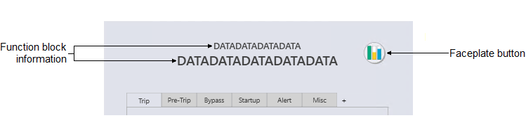
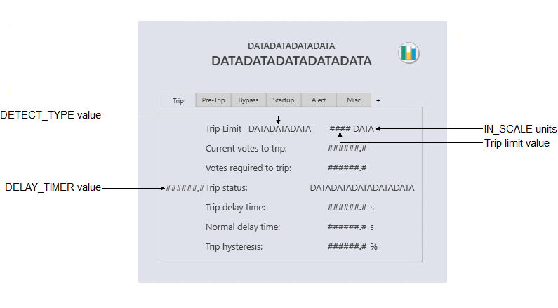
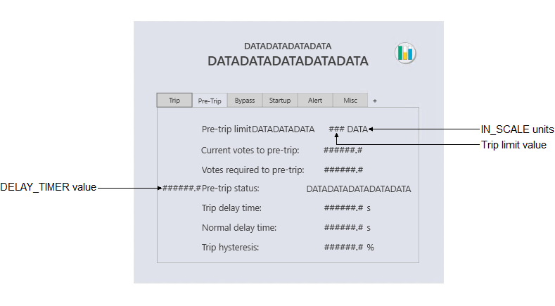
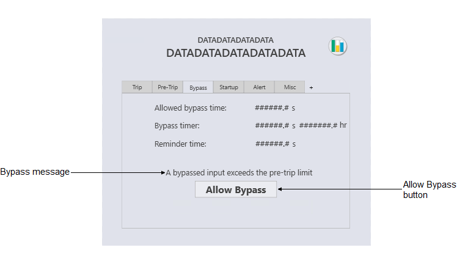
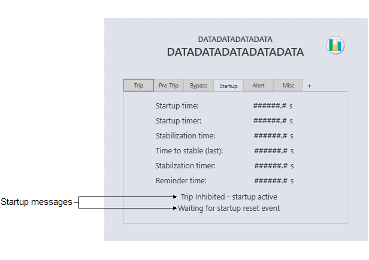
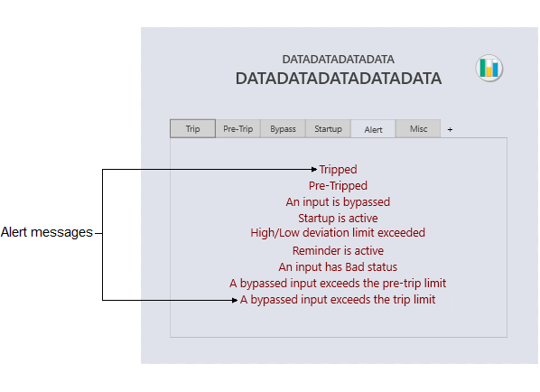
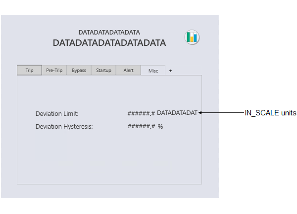

AVTR_fp (Analog Voter function block faceplate)
The AVTR_fp is used
the AVTR function block and consists of several tabs. The following sections
describe the major components that are present on each tab of the AVTR_fp.
Faceplate components common to all tabs
Configuration view of common components on the AVTR
_fp

Trip tab
Configuration view of the Trip tab (AVTR_fp)

- Trip limit
- Shows the value of DETECT_TYPE (Greater than or Less than), the trip limit value (TRIP_LIM), and the INSCALE units. The trip limit value is compared to the input value to determine whether an input is a vote to trip the output.
- Current votes to trip
- Shows the current number of trip votes. (Based on TRIP_VOTES.)
- Votes required to trip
- Shows the number of votes required to trip the output. (Based on A_NUM_TO_TRIP.)
- Trip status
- Shows the state of the vote to trip. (Based on TRIP_STATUS.) When TRIP_STATUS is Delayed, a DELAY_TIMER value field appears.
- Trip delay time
- The configured time that a vote to trip must remain a vote to trip before the output changes to tripped. (Based on TRIP_DELAY.)
- Normal delay time
- The configured time that a vote to trip must remain clear before the output changes to the normal state. (Based on NORMAL_DELAY.)
- Trip hysteresis
- Shows the deadband, in percent of IN_SCALE, applied to the trip limit for resetting a vote to trip or vote to pre-trip.
Pre-Trip tab
Configuration view of the Pre-Trip tab (AVTR_fp)

- Pre-trip limit
- Shows the value of DETECT_TYPE (Greater than or Less than), the pre-trip limit (PRE_TRIP_LIM), and the INSCALE units. The pre-trip limit is compared to the input value to determine a pre-tripped condition.
- Current votes to pre-trip
- Shows the current number of pre-trip votes. (Based on PRE_VOTES.)
- Votes required to pre-trip
- Shows the number of votes required to trip the output. (Based on A_NUM_TO_TRIP.)
- Pre-trip status
- Shows the state of the vote to pre-trip. (Based on PRE_TRIP_STATUS.) When PRE_TRIP_STATUS is Delayed, a PRE_DELAY_TIMER value field appears.
- Trip delay time
- The configured time that a vote to trip must remain a vote to trip before the output changes to tripped. (Based on TRIP_DELAY.)
- Normal delay time
- The configured time that a vote to trip must remain clear before the output changes to the normal state. (Based on NORMAL_DELAY.)
- Trip hysteresis
- Shows the deadband, in percent of IN_SCALE, applied to the trip limit for resetting a vote to trip or vote to pre-trip.
Bypass tab
Configuration view of the Bypass tab (AVTR_fp)

- Allowed bypass time
- Shows the duration of time a maintenance bypass can be active. (Based on BYPASS_TIMEOUT.)
- Bypass timer
- Shows the value of BYPASS_TIMER.
- Reminder time
- Shows the value of REMINDER_TIME, which reminds operators that a bypass timeout is imminent.
- Bypass messages
- On a running display, a message may appear on the Bypass
tab. The visible message depends on the current bypass conditions. The
following table shows the possible messages and under what condition each
appears.
Message Bypass condition An input is bypassed The Bypass bit is set in AVTR_ALERTS. A bypassed input exceeds the pre-trip limit The "bypassed pre-trip" bit is set in AVTR_ALERTS. A bypassed input exceeds the trip limit The "bypassed trip" bit is set in AVTR_ALERTS. Trip inhibited - votes required exceed votable inputs Trips are inhibited per TRIP_STATUS and the startup bypass is not active. Bypasses are not permitted at this time BYPASS_PERMIT and the bypass option, Bypass permit is not required for maintenance bypass, are both False. - Allow/Disallow Bypass button
- The Allow Bypass button is visible when BYPASS_PERMIT is False and the bypass option, Bypass permit control should be visible in runtime interface, is True. Click the button to set BYPASS_PERMIT to True.
Startup tab
Configuration view of the Startup tab (AVTR_fp)

- Startup time
- Shows the value of STARTUP_TIME. This field is visible when the startup override is configured as time-based.
- Startup timer
- Shows the value of STARTUP_TIMER. This field is visible when the startup override is configured as time-based and is active. When visible, this field allows a write to STARTUP_TIMER.
- Stabilization time
- Shows the value of STABLE_TIME. This field is visible when the startup override is configured as time-based and configured to expire on stabilization.
- Time to stable (last)
- Shows the value of TIME_TO_STABLE. This field is visible when the startup override is configured to be time-based and to expire on stabilization.
- Stabilization timer
- Shows the value of STABLE_TIMER. This field is visible when the startup override is configured to be time-based, to expire on stabilization, and the startup override is active.
- Reminder time
- Shows the value of REMINDER_TIME. This field is visible when the startup override is configured as time-based and the reminder is configured to apply to startup bypasses.
- Startup messages
- On a running display, a message may appear on the Startup
tab. The visible message depends on the current startup override conditions.
The following table shows the possible messages and under what condition each
appears.
Message Startup override condition Trip inhibited - startup active The startup override is active Waiting for startup reset event The startup override is active and the startup bypass duration is configured as event-based
Alert tab
Configuration view of the Alert tab (AVTR_fp)

- Alert messages
- On a running display, a message may appear on the Alert
tab. The visible message depends on which bits are set in AVTR_ALERTS. The
following table shows the possible messages and under what condition each
appears.
Message Alert condition TRIPPED The Trip bit is set PRE-TRIPPED The Pre-Trip bit is set An input is bypassed The Bypass bit is set Startup is active The Startup bit is set High/Low deviation limit exceeded The Deviation bit is set Reminder is active The Reminder bit is set An input has Bad status The "bad input" bit is set A bypassed input exceeds the pre-trip limit The "bypassed pre-trip" bit is set A bypassed input exceeds the trip limit The "bypassed trip" bit is set
Misc tab
Configuration view of the Misc tab (AVTR_fp)

- Deviation Limit
- Shows the value of DEV_LIM. This field is visible when the online–only parameter, NOF_INPUTS, is greater than 1 (visible unless this is a 1oo1 voter).
- Deviation Hysteresis
- Shows the value of DEV_HYS. This field is visible when the online–only parameter, NOF_INPUTS, is greater than 1.